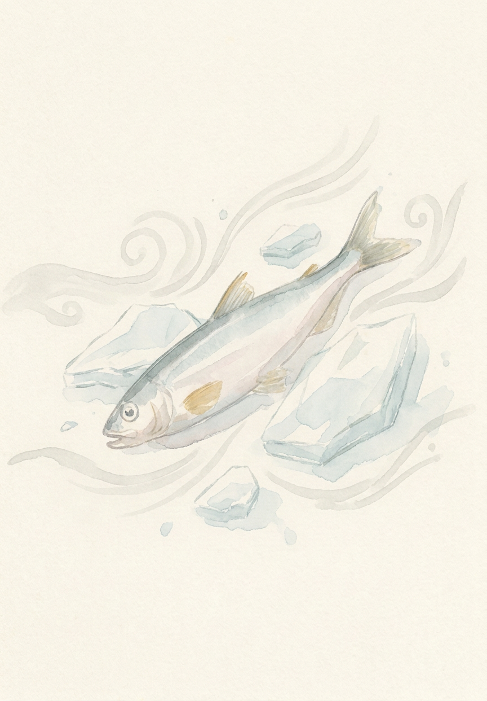

Корюшка
На Сахалине корюшка — не деликатес и не редкость. Она — часть зимнего ритма.
Когда температура держится ниже нуля и море берёт под себя лёд, на горизонте появляются первые тёмные точки — рыбаки. Потом точки становятся линиями, линии — целыми улицами палаток. И уже трудно понять: люди пришли за рыбой или за той особенной тишиной, которой больше нигде нет.
Лёд редко бывает стеклянным. Чаще он белый, сбитый, присыпанный ветром, как будто кто-то провёл по нему жёсткой кистью. Среди глухого эха есть ещё один звук — лёгкий, металлический, частый: корюшка бьёт по снасти.
[Здесь нужна авторская заметка: конкретное место, год и личная сцена. Текст не выдавать за подтверждённое воспоминание до сверки.]

Сезон / уточнить
В исходной странице указан ориентир: зима — ранняя весна, январь–март. Проверить границы по виду и району; сезон не одинаков для всего острова.
Рецепт / автор добавит
Место для точных ингредиентов, выхода, оборудования, времени, температуры и авторского рассказа о блюде.